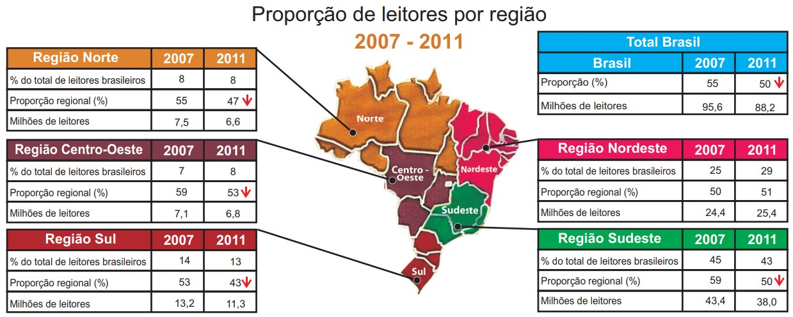

Questão 1
Segundo a pesquisa Retratos da Leitura no Brasil, realizada pelo Instituto Pró-Livro, a média anual brasileira de livros lidos por habitante era, em 2011, de 4,0. Em 2007, esse mesmo parâmetro correspondia a 4,7 livros por habitante/ano.
 Instituto Pró-Livro. Disponível em: http://www.prolivro.org.br. Acesso em: 3 jul. 2012 (adaptado).De acordo com as informações apresentadas acima, verifica-se que:
ATENÇÃO!
Você está saindo da área do Simulado. Ao deixar essa página suas respostas serão desconsideradas.
ATENÇÃO!
Você tem certeza de que deseja enviar suas resposta e ver seu resultado? Ao confimar não será possível preencher questões deixadas em branco.